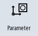
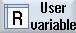

You can search for R parameters and user variables.
Procedure
|  | 1. | Select the "Parameter" operating area. |
|  | 2. | Press the "User variable" softkey. |
 | 3. | Press the "R parameters", "Global GUD", "Channel GUD", "Local GUD" or "Program PUD" softkeys to select the list in which you would like to search for user variables. |
 | 4. | Press the "Search" softkey. The "Search for R Parameters" or "Search for User Variables" window opens. |
 | 5. | Enter the desired search term and press "OK". |
| | | The cursor is automatically positioned on the R parameters or user variables you are searching for, if they exist. |